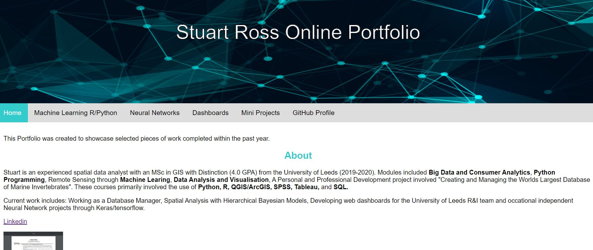

How I Made This Website
As I had next to no experience in web design I knew that this was going to be quite the project for me. All I knew is that I wanted to do it through code and not an interface like wordpress. This way I knew I would be sure to learn a skill here or there.

First I had to find a style that I liked. I decided on the blog style format, taking inspiration from ouwang.me. I liked the blog style as this way employers could choose to see either my most recent work or just filter through to whatever they wanted to see, whether that be a large project or something I've been doing on the side just for fun.
#1. The Old Page
Below is the old homepage of my orginal portfolio / website. It was my first time trying to make something with css, js, and html and I did the bare minimum. It's maybe for that reason that I didn't update it very frequently, as their is only one example project per tab. While I knew I needed to put a bit more time and effort into my new webpage to make it more sleak and modern, I still prefer the banner format for the tabs.

#2. The New Page
As when it comes to learing anything the first place I go is usually Youtube. There I found the most common method of portfolio creation is to just take a free online template and edit into you own. Youtube is also where I learned how to publish to github pages, a free server for small websites like this one. Github pages will be extremely usefull in the future when it comes to wanting to share some of my visualisations and apps.
While this would make my life easier, I wasn't completely sold. I decided to make a comprimise and take a template and make sure I significantly messed around with all components of it to tweak it to my needs. This involved setting up new classess and working directly with css and js. This was honestly a slow process, and to be honest now that I have a strong grasps on the components, next time I want to build it from scratch myself as I did with my first one. This will end up being way more effcient.

Stuart Ross
A Data Science Intern at Leeds Institute of Data Analytics. This was completed in my spare time as an independent learning oppertunity... and honestly just for a bit of fun too.